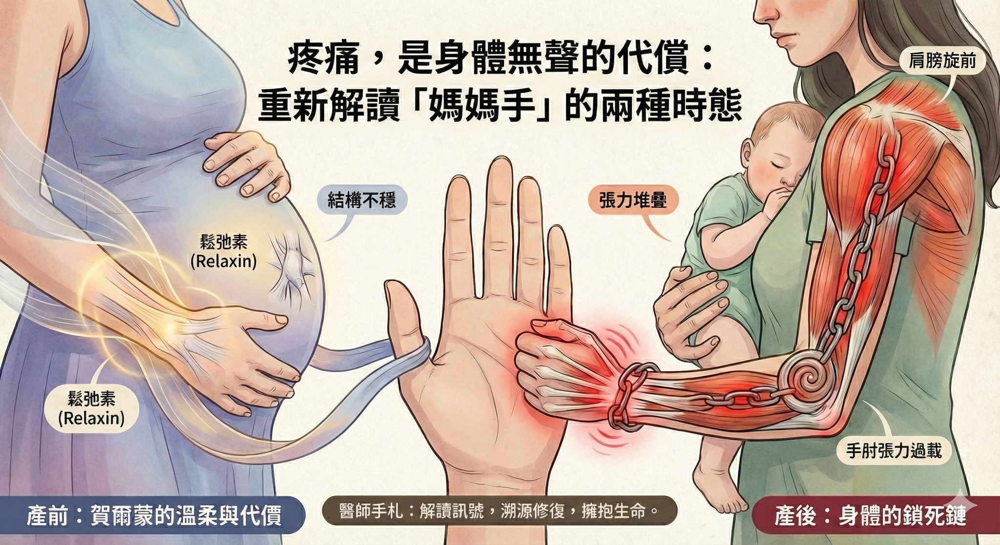

疼痛，是身體無聲的代償：重新解讀關於「媽媽手」的兩種時態
【 疼痛，是身體無聲的代償：重新解讀關於「媽媽手」的兩種時態 】
關於媽媽手這類常見的手腕疼痛，在臨床的軸線上，其實可以被劃分為兩個截然不同的時態：「懷孕前」與「懷孕後」。
雖然診間裡絕大多數的身影，都是產後因為育兒勞損而求助的母親，但這兩種疼痛背後的生理邏輯卻大相徑庭。
媽媽手要完全根治，真的是個不容易的治療過程。難以避免的日常使用，常常讓治療效果“跳恰恰”，但持續努力地治療，總還是會有根治的一刻，今天總算讓一位產後媽媽手至少痛了一年半以上的媽媽畢業。
-
🥀 產後的痛：當身體成為一條鎖死的鏈
這位媽媽走進診間時，神情是疲憊的。
為了照顧孩子，她的手腕疼痛已經持續了一年半。這五百多個日子裡，她試過護具、復健，甚至不得不接受局部類固醇注射。然而，那些短暫的緩解，總在幾次家務後消失殆盡。
「我這個會好嗎？會不會這輩子都好不了？」
-
面對這樣的頑固疼痛，我們不能只看手腕。
經由整體性結構評估，這類疼痛常常是一個「連鎖反應」的終點。
長期的育兒姿勢——環抱、擠奶、因疲憊而蜷曲的睡姿——讓她的身體形成了一條封閉的「動力鏈 (Kinetic Chain)」：
胸大肌與闊背肌的緊縮 ➔ 帶動肩膀/肩胛骨內捲 ➔ 手肘屈肌群張力過載 ➔ 最終拉垮了末端的拇指肌腱。
手腕是無辜的，它只是這場「上游結構失衡」的受害者。
在三個月的療程中，多數的治療除了針對她疼痛的手腕，也一併進行了一場「源頭溯源修復」：
先鬆解了她緊繃的胸廓與後背，接著利用乾針釋放手肘的張力點。當那股將身體「往內捲」的巨大力量消失，末端的疼痛自然隨之解除。
-
🤰 產前的痛：源自賀爾蒙的溫柔與代價
而在光譜的另一端，則是那些「還沒抱到孩子就開始痛」的準媽媽們。
這類疼痛常讓人困惑：「明明還沒開始操勞，為什麼手就廢了？」
這其實源自於身體為生產做準備的生理機制。
懷孕後期，體內高濃度的 鬆弛素 (Relaxin) 會讓全身韌帶變鬆。當手腕的韌帶（被動穩定系統）變得不穩，周圍的肌肉（主動穩定系統）就必須過度收縮來維持穩定。
這不是過勞，這是身體為了適應新生命而付出的代償。
-
👨⚕️ 醫師的臨床手札
理解了這兩個時態，我們才能給予最精準的治療。
產前的痛，源於「結構的不穩」；產後的痛，源於「張力的堆疊」。
治療不應該只是壓制疼痛，而是要去解讀身體透過疼痛傳遞的訊號。
無論是協助準媽媽度過生理適應期，還是幫助資深媽媽解開深鎖的肌肉鏈，我們最終的目的只有一個——讓這雙手，能無痛且堅定地，擁抱生命中最重要的重量。
#媽媽手 #狹窄性肌腱滑膜炎 #中醫徒手 #動力鏈 #產後修復 #懷孕後期 #鬆弛素 #乾針 #徒手治療
太初中醫診所 東門中醫
中醫師 黃彥鈞
---
🔎 實證醫學參考文獻 (References)：
1. Cavaleri R, et al. (2016). The effectiveness of conservative interventions for the management of de Quervain's disease. (Journal of Hand Therapy).
(探討針對慢性頑固個案，結合整體上肢動力鍊（肩頸胸）的評估與介入，能突破局部治療的瓶頸。)
2. Schnedl, M. et al. (2020). Etiology and management of de Quervain's tenosynovitis in pregnancy. (Journal of Orthopaedics).
(分析孕期賀爾蒙變化（鬆弛素）與體液滯留對肌腱滑膜炎的影響，指出這是產前媽媽手常見的生理機制。)
3. Myers TW. (2014). Anatomy Trains.
(解剖列車理論闡述了前臂筋膜線的連續性，說明了近端肩肘張力與遠端手腕症狀之間的力學關聯。)
4. Fernández-de-las-Peñas C, et al. (2018). Dry needling for the management of myofascial trigger points in the upper quarter.
(實證指出針對上肢近端肌群（如肩膀、手臂）進行處置，有助於改善相關聯的肌肉骨骼疼痛。)
5. Razzano, S., et al. (2019). Relaxin family peptide receptors in the musculoskeletal system.
(分析鬆弛素在肌肉骨骼系統中的角色，及其對關節韌帶特性與穩定度的影響。)
